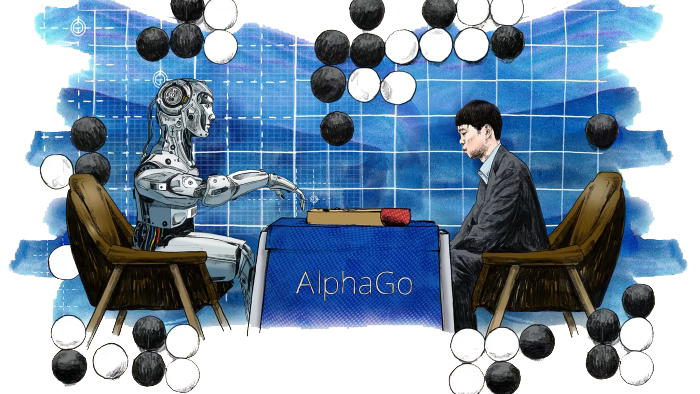

Introduction
Imagine a world where a computer program can master any game without even knowing its rules beforehand. A world where this program isn’t just playing games, but consistently outperforming the best human players, including world champions. This might sound like a plot from a sci-fi novel, but it's a reality made possible by an advanced field of artificial intelligence known as Reinforcement Learning (RL).
The Dawn of a New Era in AI
Reinforcement Learning has already made headlines with some major achievements. The historic win of AlphaGo, developed by DeepMind, over Lee Sedol, a world champion in the ancient game of Go, was a watershed moment. This victory wasn’t just about winning a game; it was a demonstration of the incredible potential of RL algorithms to tackle problems of immense complexity.
The prowess of RL doesn't stop there. AlphaStar, another brainchild of DeepMind, took the gaming world by storm by mastering the strategic depths of StarCraft 2, a game known for its intricate tactics and rapid decision-making. Similarly, OpenAI's robotic hand, adept at solving the Rubik’s Cube, shows the adaptability of RL in physical problem-solving tasks. These aren’t just triumphs in gaming; they're landmarks in the journey of AI.
OpenAI and the Evolution of RL Techniques
The company we no longer need to introduce: OpenAI, made a significant contribution to the field of RL in 2017 by introducing Proximal Policy Optimization (PPO). This innovative technique quickly became a cornerstone algorithm at OpenAI, marking a new direction in the research and application of RL. PPO stands out for its efficiency and effectiveness in training AI models, particularly in complex environments where traditional RL methods struggle.
By optimizing policies in a more stable and reliable manner (we'll dive into that later) PPO has facilitated advancements in various AI applications, enhancing the capabilities and potential of artificial intelligence systems. This development by OpenAI represents a major milestone in RL, illustrating the organization's commitment to the field of AI.

Our Exploratory Path
But to truly appreciate the significance of PPO and its impact, we need to start at the beginning. Our exploration will cover:
- Understanding Reinforcement Learning:
- The Role of Policy Gradient Methods:
- Demystifying Proximal Policy Optimization:
Delving into the basics of RL, we'll explore how this technology enables machines to learn from their interactions with the environment.
Before we get to PPO, understanding policy gradient methods is crucial as they form the foundation upon which PPO is built.
Finally, we'll dive deep into PPO, exploring its mechanics and why it's become a favored algorithm in RL.